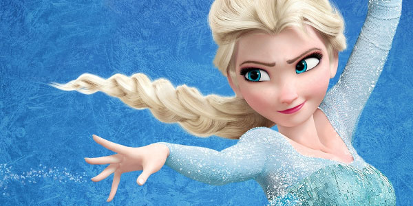

A verdadeira razão para que Elsa foi a heroina do filme Frozen!
12/11/2014  Vamos pensar de volta a um tempo antes congelado tornou-se uma sensação em toda a toda forma de cultura pop, do cinema , a música , a televisão eo teatro . Antes que o filme estreou, houve resmungos sobre o quão longe equipa criativa da Disney tinham perdido a partir de inspiração para o seu mais recente recurso de princesa da Disney. Em Hans Christian Andersen, "The Snow Queen", o real gelado titular era um vilão. Então, como congelados da Rainha Elsa vir a ser um herói? É realmente uma história comovente. Wired recentemente sentou-se com alguns dos maiores jogadores da Walt Disney Animation Studio para discutir próxima aventura animada do estúdio Big Herói 6 , mas embora congelado está definitivamente fora dos teatros , é nunca longe de nossos pensamentos coletivos.Então, juntamente com detalhes sobre o super-herói dos desenhos animados doce de cor, a revista tem alguns interessantes por trás das cenas mais detalhes sobre como o personagem de Elsa evoluiu. Nas primeiras versões do filme, Elsa era um vilão flat-out, voluntariamente usando seus poderes de gelo para devastar sua cidade natal. Mas da Pixar John Lasseter e outros na história da Disney Confiança começou a suspeitar difamando ela não era a melhor abordagem para a história de Elsa. Lasseter, em particular, que empurrou a luta de Elsa - aceitar um aspecto de si mesma, ela não pode ignorar e não pode mudar - poderia ser uma narrativa relacionáveis para as crianças. Ele estava particularmente inspirado por seu filho de 10 anos de idade, Sam, que cresceu muito frustrado quando ele foi diagnosticado com diabetes tipo 1. Para Sam, parecia um destino injusto. A própria história de Elsa é uma das aflições - não tanto de suas habilidades para comandar o gelo ea neve a partir de seu medo de que essas coisas poderiam ferir seus entes queridos como eles uma vez ferir a pequena Anna.
 Este é encantador. Enquanto nós estamos sempre dispostos a relatar histórias de como um filme inspirado na vida real as crianças , é bom saber que um garoto da vida real pode inspirar um filme que passa a significar tanto para tantos. Naturalmente, John Lasseter forjou sua reputação na Disney e Pixar em suas notas sólidas sobre storytelling. Como grande herói 6 co-direta Chris Williams coloca, "Quando John está trabalhando em estreita colaboração com a gente, filmes ficar melhor." No caso de você precisava de mais uma prova, esta peça Wired também observa outra grande congelado contribuição que era tudo Lasseter. Você sabe que o momento final de "Let It Go", quando Elsa literalmente deixa seu cabelo para baixo antes que ela struts confiança para a varanda para suas notas finais? Claro que você faz.
Este é encantador. Enquanto nós estamos sempre dispostos a relatar histórias de como um filme inspirado na vida real as crianças , é bom saber que um garoto da vida real pode inspirar um filme que passa a significar tanto para tantos. Naturalmente, John Lasseter forjou sua reputação na Disney e Pixar em suas notas sólidas sobre storytelling. Como grande herói 6 co-direta Chris Williams coloca, "Quando John está trabalhando em estreita colaboração com a gente, filmes ficar melhor." No caso de você precisava de mais uma prova, esta peça Wired também observa outra grande congelado contribuição que era tudo Lasseter. Você sabe que o momento final de "Let It Go", quando Elsa literalmente deixa seu cabelo para baixo antes que ela struts confiança para a varanda para suas notas finais? Claro que você faz.
Comentários